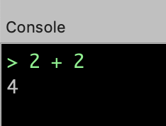

Scripting con JavaScript en Tiled
Carlos León
cleon@ucm.es
Extensiones en Tiled
A partir de la versión 1.3, Tiled permite crear scripts con JavaScript
Figura 1: Lo primero es abrir la consola
podemos ejecutar JavaScript

Figura 2: Cualquier expresión de JavaScript funciona
Se puede pegar un script pequeño de JavaScript en la línea de comandos,
o se pueden ejecutar aquellos que está en
la
carpeta extensions
Preguntar algo al usuario:
if(tiled.confirm("¿Quieres borrar todo el mapa?", "Borrado total")) {
tiled.alert("¡Borrado!");
}
Recorrer todo el mapa y cambiar una propiedad:
for(let x = 0; x < tiled.activeAsset.width; x++) {
for(let y = 0; y < tiled.activeAsset.height; y++) {
tiled.activeAsset.currentLayer.tileAt(x, y).propiedad = valor;
}
}
La API del motor de JavaScript tiene detalles de cómo se puede hacer extensiones a Tiled con JavaScript
Ejemplo: Flip aleatorio de objetos
Queremos que en una capa de objetos, algunos de los objetos cambien su orientación vertical (así, no tenemos que andar cambiando la propiedad manualmente)

Figura 3: Ejemplo de ejecución
Recorremos un mapa y hacemos flip aleatoriamente a los objetos
function flipObjects(map) {
for (let i = map.layerCount - 1; i >= 0; i--) {
const layer = map.layerAt(i);
let numFlips = 0;
if (layer.isObjectLayer) {
for (const obj of layer.objects) {
let coin = Math.random()
if (coin < 0.5) {
obj.tileFlippedVertically = true;
numFlips++;
}
}
}
return numFlips;
}
}
Creamos una acción para ejecutar la función anterior
let flipObject = tiled.registerAction("FlipObject", function(/* action */) {
const map = tiled.activeAsset;
if (!map.isTileMap) {
tiled.alert("Not a tile map!");
return;
}
const numFlips = flipObjects(map);
tiled.alert("Number of objects flipped = " + numFlips);
return;
});
flipObject.text = "Flip objects in layer";
flipObject.shortcut = "Ctrl+Shift+F";
Añadimos la acción al menú de Layer
tiled.extendMenu("Layer", [
{ separator: true },
{ action: "FlipObject" },
]);
Más ejemplos…
https://github.com/mapeditor/tiled-extensions
Y en el readme hay enlaces a otros repositorios de ejemplos.